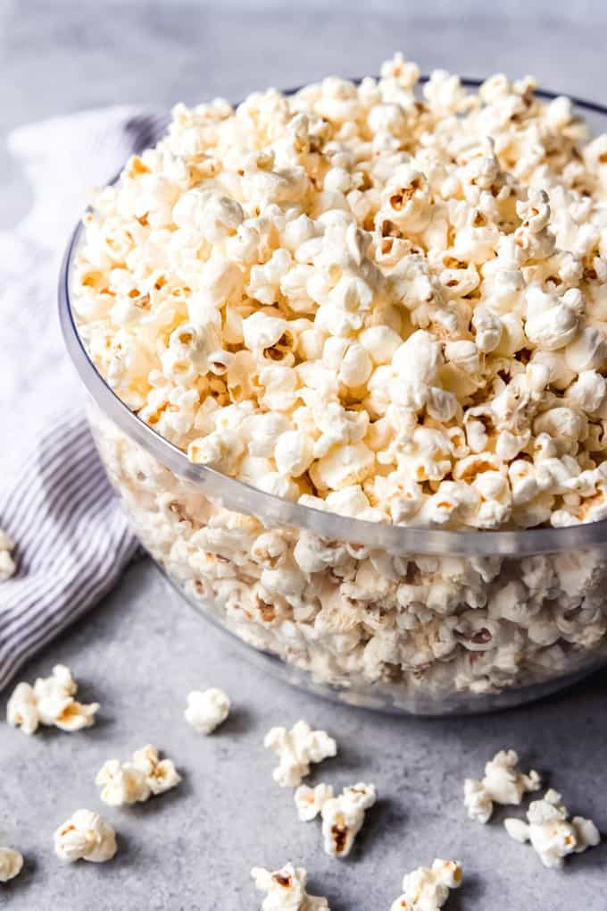

Stovetop Popcorn

Description
Popcorn is a popular snack for good reason. It is cheap, easy to make, and can be sweet, savory, or both. Popcorn is a blank slate for any number of toppings and flavors. Once you learn to make this super simple snack it will be a staple in your home
Ingredients
- 2 Tablespoons neutral flavored oil, avocado oil works well
- 1/2 cup popcorn kernels
- salt to taste
- optional toppings: ranch seasoning, chili powder, cinnamon, caramel, chocolate, melted butter, nutritional yeast, etc